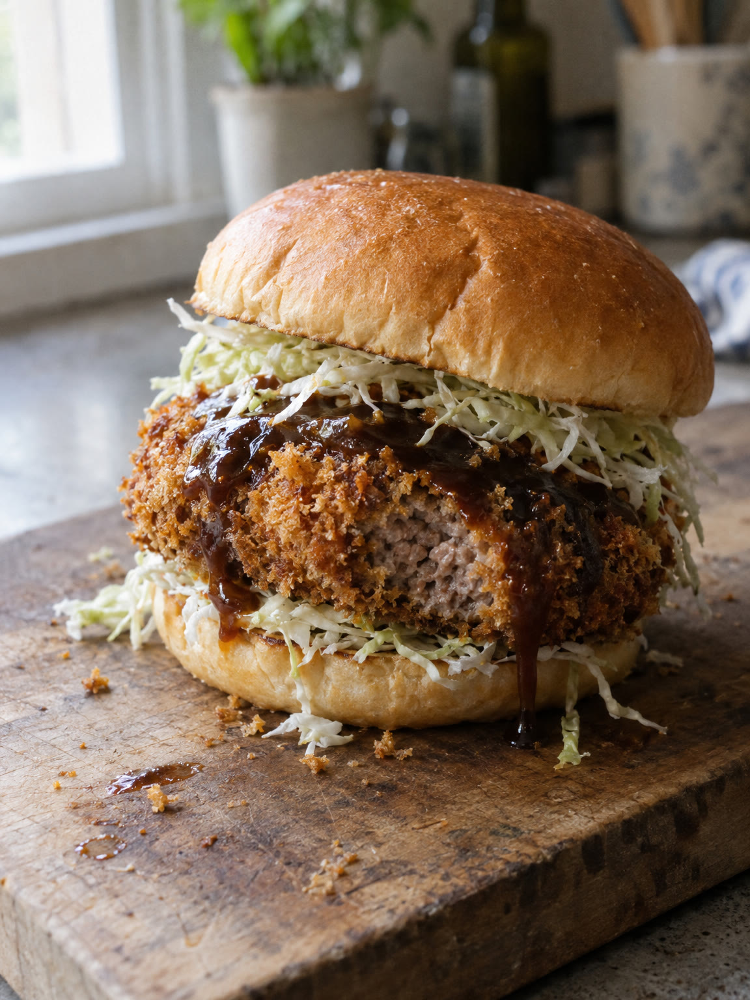

Hamburguesa Menchi Katsu Burger
15min●●●○○
para
personas

Pasos
- Aplanar la carne: Colocá el medallón sobre papel film y aplanalo uniforme con mazo de cocina.
- Sazonar: Condimentá por ambos lados con sal y pimienta negra.
- Empanar: Pasá por harina → huevo batido → pan rallado/panko, presionando para que adhiera.
- Freír: En sartén con aceite caliente, freí hasta dorar y quedar crujiente por ambos lados. Escurrí en papel absorbente.
- Armar: Base del pan + medallón frito + salsa + repollo/lettuga picada + tapa. Cortá a la mitad para servir.